This morning saw the beginning of the 10th annual js13kGames competition! For me, this is one of the most exciting times of
the year. Running from August 13th - September 13th, developers are challenged to build games with JavaScript. The catch (and the
fun part) is that each entry must be less than or equal to 13 kilobytes. I was lucky enough (and shocked) to actually come in 14th
place in this competition 3 years ago, when I last participated back in 2018.
Another interesting requirement for the competition, is that every year has a particular theme. One which remains unannounced until the morning
of August 13th. This morning, the theme was finally revealed. My alarm set for 7AM EST, I woke up, checked my phone, and to my delight saw this
waiting for me
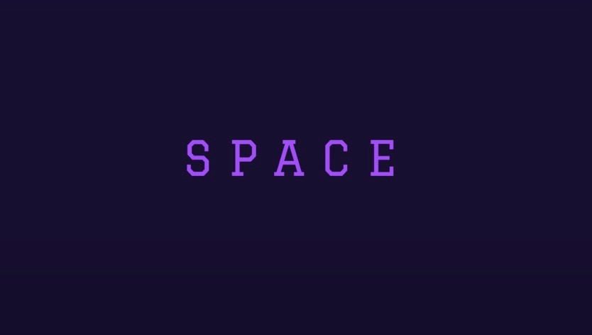
SPACE!
Oh, this could not have worked out any better! I've had an idea for awhile now about a procedurally generated game, and this theme fits
perfectly for what I want to do. I haven't participated in the competition since 2018, however this year, I shall return. Developing my
top 20 award winning entry back in 2018 was one of the most enjoyable experiences I can remember having in a very long time.
I may be posting updates throughout this next month.
GLTF files
Aug 4, 2021
Most proprietary game engines use custom file formats to fulfill the specific requirements of the game. For general purpose use, we have many different file formats at our disposal. One of the best for storing and working with 3D data is GLTF (GL Transmission Format) and Wanderlust makes use of this file type exclusively in its engine to load scenes and models.
Like I mentioned before, the engine is written for the web in JavaScript using Three.js for graphics rendering and Cannon.js for physics simulation. Three.js provides great support for working with GLTF files in the GLTFLoader class. Since GLTF uses JSON-like syntax, we can conveniently define objects in the game world. Here is a high-level example of how we define the ground that the vehicles will drive on.
"name": "ground",
"extras": {
"data": "physics",
"type": "box"
}
3D modeling applications, such as Blender, have features that allow users to export scenes and models as GLTF. The "extras" attribute shown in the code above can be added to the file and customized to meet the requirements of the application. For my own requirements, I have added the custom attributes "data" and "type" to let the engine know how it should handle the object.
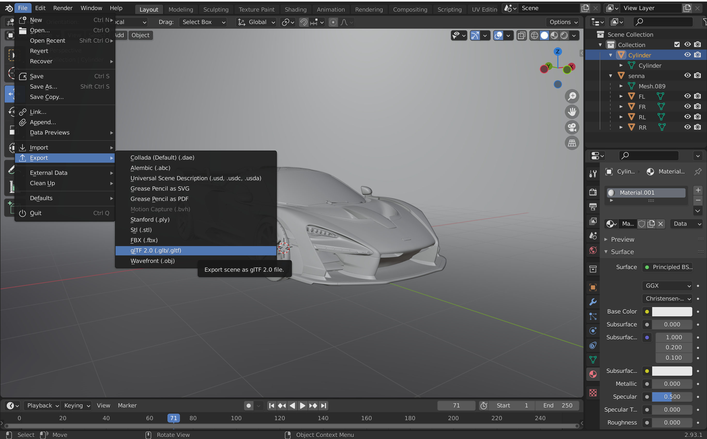
Note that GLTF files can come with two different extensions. The .gltf extension is the JSON based version that is easier to view and edit. The other extension is .glb which has all the same data as the JSON version, but is stored in binary instead of plain text.
Vehicle handling
Jul 23, 2021
This topic is going to take many blog posts to complete. It took a long time to get working correctly. The material is also extremely broad and complex, so I need to figure out the best way to present it. I want to cover it though, because I think it is interesting and I learned a lot in the process. I've always been interested in how vehicles work in video games like Grand Theft Auto and the Forza Horizon series. Developing these systems is challenging but rewarding. It becomes interesting from the perspective of video games because there is a lot of room to play around and have fun.
I learned quite a bit about vehicle handling and tire dynamics from an informative GDC (Game Developers Conference) talk given by Avalanche Studios' Hamish Young a few years ago. Like Hamish says in his presentation, you want the driving to be “believable”, meaning you do not want it to be realistic like a driving simulation, however, you do want it to be somewhat familiar and to feel like the car is behaving as an actual car would.
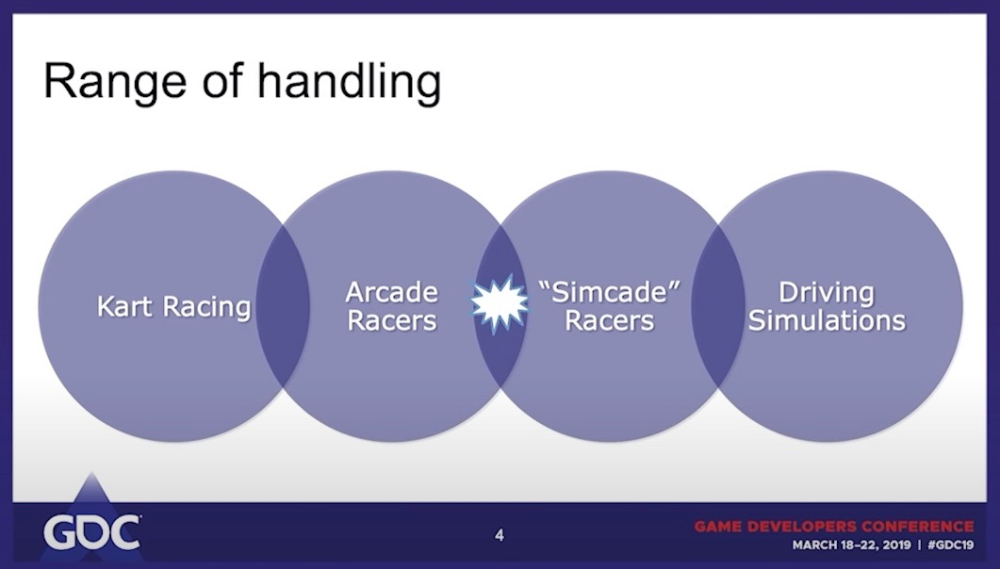
For their game, Just Cause 4, Avalanche Studios and Hamish's goals were to land in the sweet spot between Arcade Racer and Simcade Racer. This is also what I set out to achieve with the Wanderlust driving system. This spot is where I think the handling of vehicles in games can potentially be the most fun for the player.
Offscreen indicators
Jul 19, 2021
If we want the offscreen indicator to float along the edges of the screen while the target is out
of view, then it would be best to check where the line from point A to point B intersects with the screen border.
We will define the border with an offset so that the indicator has room to point towards the target's direction.
The border will contain 4 lines. We will call these east, west, north, and south. If the target is offscreen, we
will check if the line from the player to the target intersects with any of these 4 lines, like demonstrated in
the video clip below
Any two intersecting lines in 2D can be represented by the equations
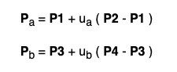
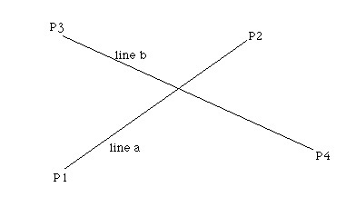
If we have two straight lines on the same plane, (we'll refer to them as line A and line B), then we can determine their
point of intersection (if it exists) by first solving for the point where both line equations are equal to each other.
This yields two more equations with the unknown variables ua and ub. Solving for both of these unknown
variables gives us the following expressions
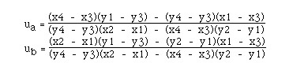
If we evaluate just one of these expressions for either ua or ub, and then substitute it into the line equation,
we get the point of intersection (if it exists). Here it is translated into code
function getLineIntersection(x1, y1, x2, y2, x3, y3, x4, y4)
Now that we have the point where the line from the player to the offscreen target intersects with the screen border, we
can stop at the point of intersection and have the indicator float along the edge of the screen while the target is out
of view. To make the indicator a little more helpful to the player, we will add an arrow pointing in the correct direction
and make the lines invisible. This is demonstrated in the video below.
Although I prefer HUDs to be as minimal as possible, waypoints and indicators are elements that I feel are an absolute necessity
in game design. Especially in modern open world games, where it can be easy for the player to get lost or difficult for them to
find the next objective.
Camera work
Feb 5, 2021
Implementing an offscreen target feature on the HUD requires thought about how to handle objects that are not visible to the camera.
In theory, since we have the screen space coordinates for both the player and the target, drawing a line from
point A (player) to point B (target), and then checking where the
line intersects with the screen border should work. However, this does not consider the case of when point B is positioned behind the camera
As demonstrated in the video clip above, the line from point A to point B is in the correct position until point
B is situated behind the camera. In this case, the world space to screen space calculation causes point B to become flipped, and by extension,
the line. This behavior is not correct. We can solve this problem by flipping the line back when we detect that the camera is in front of point B.
First, we must calculate which direction the camera is facing. Three.js makes this easy with getWorldDirection
var camera_dir = camera.getWorldDirection(new THREE.Vector3());
Next, we determine where the camera is currently positioned in the world
var camera_pos = new THREE.Vector3().setFromMatrixPosition(camera.matrixWorld);
camera_pos = vector_copy.sub(camera_pos);
Last, we calculate the angle that point B sits at relative to the camera. If the angle is greater than 90 degrees,
then point B is behind the camera
var isBehind = ((camera_pos.angleTo(camera_dir)) > (Math.PI / 2));
If the boolean variable isBehind evaluates to true, then we want to find a new line from point A to point B
such that point B lies in the opposite direction. If we have any 2D vector with the coordinates
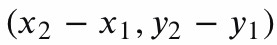
then we can find the norm (length) of the vector using the following equation. We will refer to this value as AB
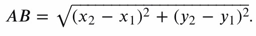
Next, we want to introduce another vector with the norm (length) of 1, and which has the following coordinates
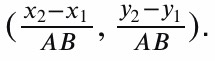
With this new vector, we can determine the flipped point B by evaluating the following expressions
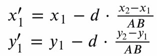
We can substitute in the length of the original vector for the value d. Here it is translated into code
The function flipLine takes the original line points and returns the flipped line pointing in the opposite direction.
Now the calculation is behaving as expected when the target is behind the camera.
From world space to screen space
Nov 24, 2020
The project function of the Three.js Vector3 class allows us to take any 3D point in the game world and convert it into
relative 2D coordinates on the screen, given that we have already set up the camera. There are other things to consider
when using this function, such as visibility and the vector’s position relative to the camera, but this will be discussed
in a future blog post. For now, we will assume that the point is within view of the camera
var vector_copy = target.clone();
vector_copy.project(camera);
Note that project (camera) does not return a copy of the vector. Instead, it directly modifies the components of the vector
that called the function. So, it is necessary to clone the original vector (target) first so that the 3D components are not
lost. Also, note that project (camera) does not complete the entire conversion that we require. Given that the vector is
currently visible to the camera, it returns the components of the vector within the range [ -1, +1 ]. This is the vector's
position in the normalized device coordinate (NDC) space. The origin (0, 0) in NDC space is in the center of the screen
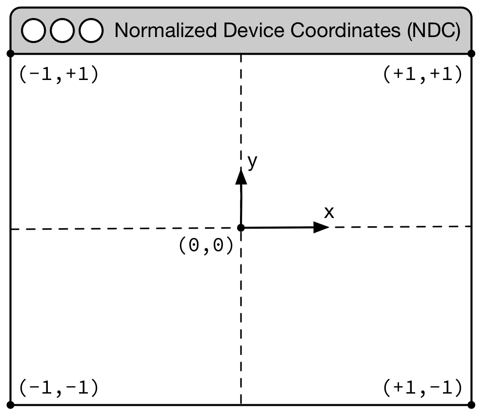
To get the relative screen space coordinates, we must convert the NDC position into the coordinate system used by the HUD overlay.
Since the HUD is an HTML canvas element, its origin (0, 0) starts from the top left of the screen
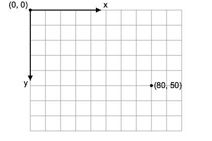
The value of 1 is added to the x component in order to set it within the range [ 0, 2 ] and the value of 1 is subtracted from
the y component to do the same. In the case of the y component, we are performing subtraction instead of addition and
then negating because the origin of the HUD overlay is at the top left
Finally, multiplying the x and y components by their respective window dimensions, will return the relative screen space
coordinates.
Canvas overlay
Oct 9, 2020
Wanderlust is built for the web using Three.js for the rendering engine and
Cannon.js for the physics engine.
With the web, games can take advantage of Canvas2D, which Wanderlust uses to implement its HUD (Heads Up Display).
This is advantageous for 2 main reasons. First, Canvas2D comes integrated with all modern web browsers, and by
default, is GPU accelerated for performance boosts. Second, the HUD can be treated as a self contained system,
separate from the Three.js library
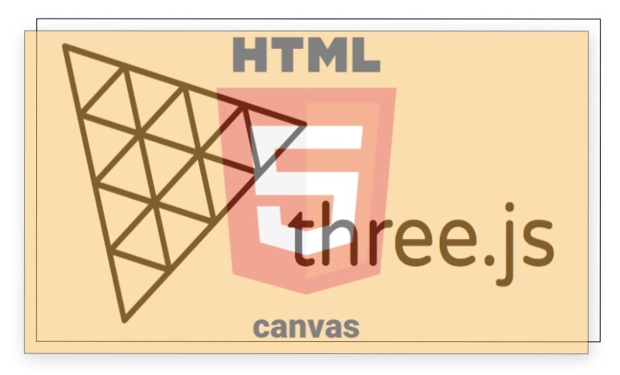
It would be possible to implement the HUD with Three.js, however, it is not great at rendering text. Also, isolating
the HUD helps with quickly identifying bugs and avoiding them. Canvas2D is also capable of parsing and rendering
complex SVG path strings with Path2D. This means that we can quickly load vector graphics that are created in another
application, such as Adobe Illustrator, and use them in the HUD.
var path = new Path2D("M -4.47 10.50 L -1.07 4.73 C -1.04 4.57 -1.02 4.40 -1.00 4.23");
context.stroke(path);
Since the HUD is treated as an HTML canvas element on top of the Three.js domElement, this prevents the player from
using the mouse and keyboard to interact with the game world. We can get around this problem by using CSS to force
the HUD layer into ignoring click events
pointer-events: none;
background: none !important;
Most modern browsers, including Chrome, Firefox, and Safari, understand pointer-events: none. So, this solution suits
the requirements.
About
Hello and welcome to my blog!
I enjoy the outdoors, traveling, writing, music, and making things. Here you will find my
musings on software development, programming, game development, mathematics, technology, art, and anything
else I'm interested in. But mostly, you will find me posting about my game dev journey and the development of my
own game, Wanderlust. I try to regularly post new stuff.